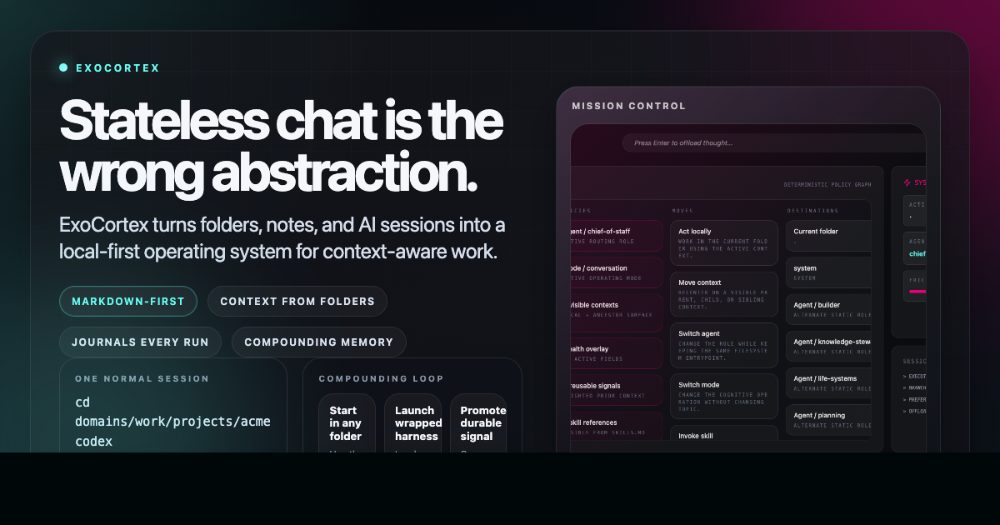
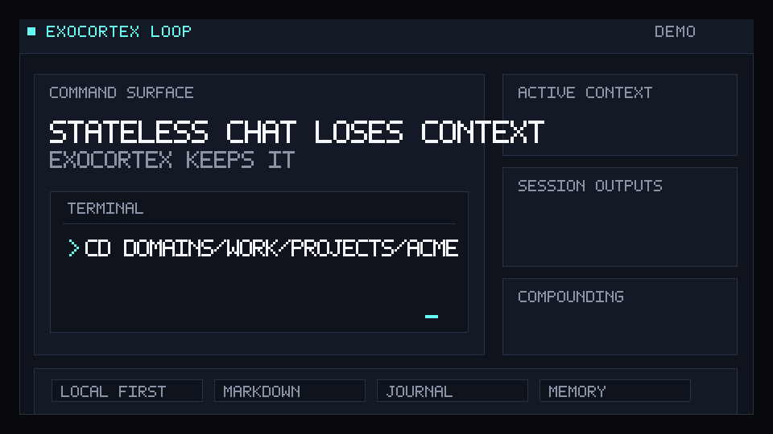
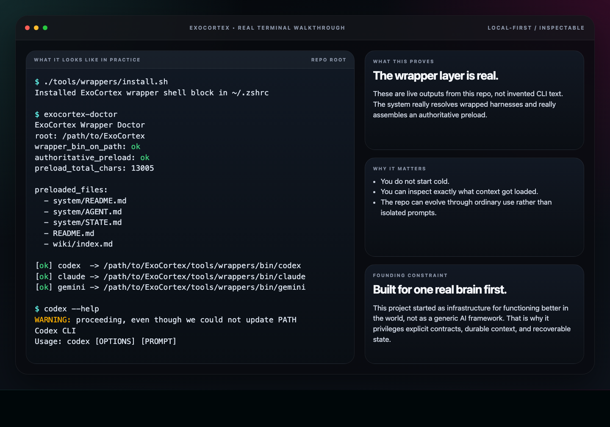
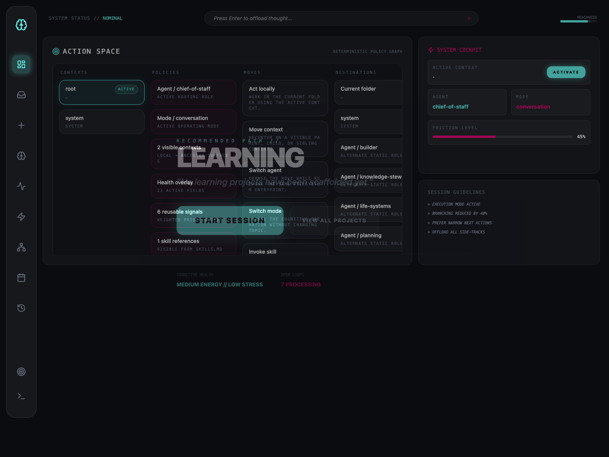
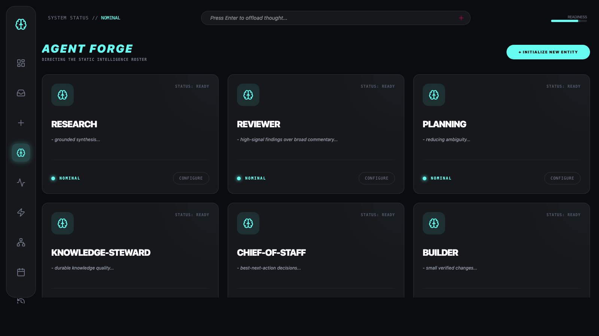
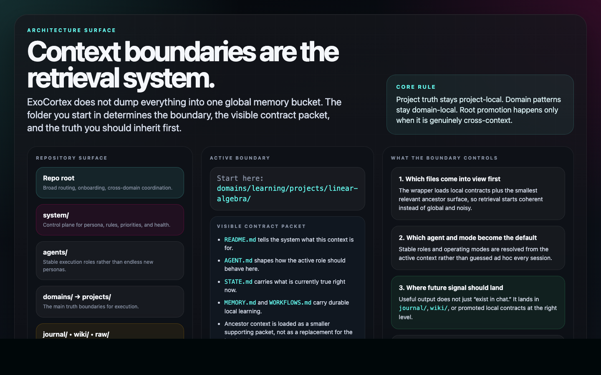
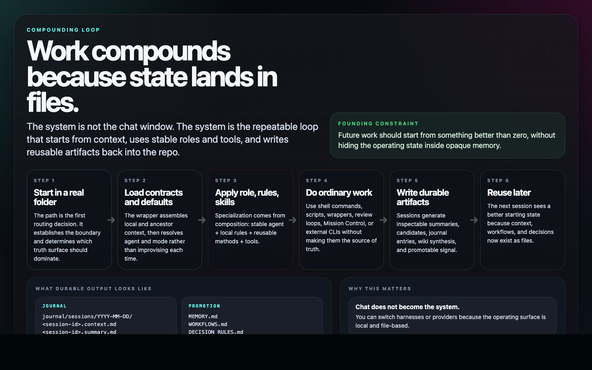

Visual tour of the system.
Use this page when you want the screenshots, loop visuals, and architecture posters in one place. Use the root README for the product overview and quickstart.
assets/exocortex-og.png for shares. For the repository link itself on GitHub, upload the same image in the repo's Social Preview settings.

The core loop is simple: start in the right folder, launch a wrapped harness, capture the session, promote durable signal, and make the next session better. The full animated version lives at assets/exocortex-loop.gif.
{kind=link}

This is based on real output from the wrapper doctor and the wrapped Codex CLI, not invented marketing text.

Mission Control gives a live control-surface view of contexts, policies, moves, and destinations without becoming a second source of truth.

The stable role set is explicit and inspectable. Specialization comes from composition, not an ever-expanding list of bespoke personas.

Where you start in the repo determines the boundary, visible contracts, and truth surface that should dominate the session.

The system compounds because sessions do not end as disposable chat. Their useful outputs land back in durable files.
- README.md for the GitHub landing page and quickstart.
- Compositional Examples for teacher, accountant, editor, and research-engineer compositions.
- First 5 Minutes for the shortest real onboarding path.
- Technical Architecture for the system model: entities, relationships, agents, skills, tools, and composition.
- agents/README.md for the stable role set and agent rationale.
- Docs README for the visual architecture tour.
- journal/README.md for the compounding loop.
- tools/wrappers/README.md for the wrapper contract.
If the README clicks but the model still feels abstract, read Technical Architecture next. It now pairs the system diagrams with concrete visual surfaces from the running UI and architecture posters.